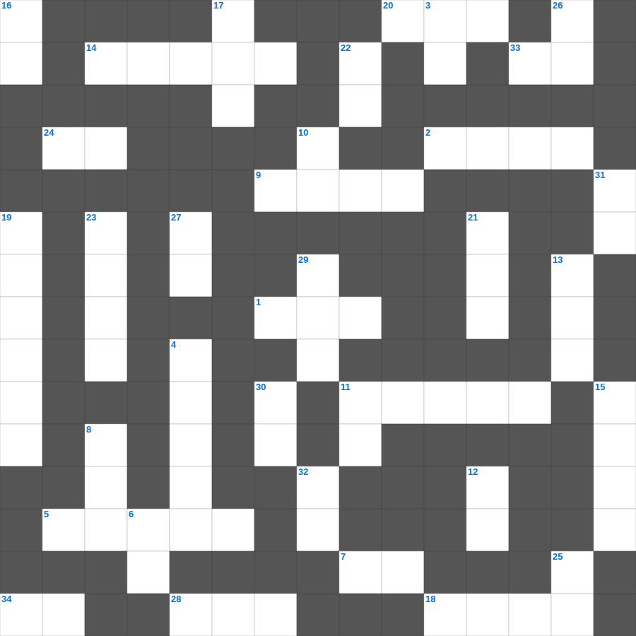

예수님의 이름과 칭호
📌 서비스 정의
십자가로세로는 교회 주보와 주일학교에서 사용할 수 있는 성경 기반 가로세로 퍼즐 서비스입니다. 성경 인물, 사건, 핵심 구절을 바탕으로 제작되었습니다. 온라인 풀이 및 인쇄 기능을 제공합니다.
예수님의의 말씀을 퀴즈로 배우는 예수님의 무료 성경퀴즈입니다. 가로 힌트와 세로 힌트를 보고 35개의 단어를 맞춰보세요. 인쇄도 가능하고 정답 확인도 바로 되니 소그룹 모임이나 가정 예배 시간에도 활용하실 수 있습니다.

📝 가로 힌트
1. 솔로몬 성전 건축에 쓰인 고급 나무
2. 우리의 신앙 고백이 담긴 기도문
5. 주 앞에서 낮추라 그리하면 주께서 너희를 이것하시리라
7. 멜리데 섬에서 바울을 문 동물
9. 기름 부음 받은 자
11. 대제사장의 판결 흉패 안에 있던 두 돌
14. 엠마오로 가던 두 제자가 예수님을 알아본 시점
18. 죽은 나사로를 향해 하신 명령
20. 솔로몬 성전의 두 기둥 이름 중 다른 하나
24. 다윗이 피신했던 블레셋 도시
28. 사도 요한이 계시록을 기록한 섬
33. 새 예루살렘 성의 길 재질
34. 일곱 금 이것 사이에 계신 인자 같은 이
📝 세로 힌트
3. 성경의 맨 마지막 단어
4. 베드로가 예수님을 모른다고 세 번 부인한 후 들린 소리
6. 예수님이 광야에서 40일간 받으신 것
8. 모세가 물을 낼 때 사용한 도구
10. 진리의 이것 띠
11. 너를 위하여 새긴 이것을 만들지 말고
12. 요셉이 보디발의 아내 유혹을 물리치고 간 곳
13. 출애굽을 기념하는 이스라엘 최대 절기
15. 예수님이 가르쳐 주신 기도
16. 베드로가 감옥에서 천사의 도움으로 나옴
17. 한 해의 첫 열매를 드리는 절기
19. 다윗이 밧세바를 범하고 나단에게 들은 말
21. 베드로가 하루에 전도하여 세례받은 사람 수
22. 여호와 이것: 평강의 하나님
23. 발람의 나귀가 말을 한 기적
25. 수고하고 무거운 짐진 자들아 다 내게로 이것
26. 너희는 세상의 빛과 이것이라
27. 성령의 9가지 열매 중 두 번째
29. 향을 피워 올리는 곳
30. 요나가 다시스로 가기 위해 배를 탄 항구
🧑🏫 교회 교육 자료 활용
이 퍼즐은 주일학교 교재 추천 자료로 활용할 수 있고, 주일학교 주보에 넣기 좋은 분량으로 구성되어 있습니다. 수업용 주일학교 교안에 활동지로 붙이거나, 예배 후 복습용 주일학교 공과교재로 바로 사용할 수 있습니다.
🏷️ 키워드
예수님의 무료 성경퀴즈, 예수님의, 십자가로세로, 성경퀴즈, 말씀퀴즈, 가로세로퍼즐, 주일학교 교재 추천, 주일학교 주보, 주일학교 교안, 주일학교 공과교재